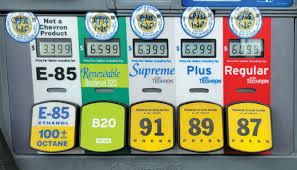
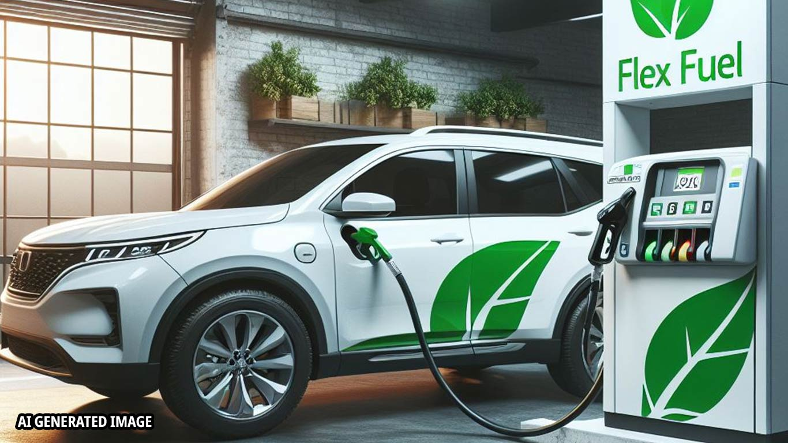

Flex Fuel for the Future

MMMMmmmmmmm... Corn.
Hard to believe that this would be a better--more sustainable fuel source than electric motors in vehicles right?
We need change
The government thought it would be a brilliant idea to continue to mine ultra rare metals. But if the planet is already as far gone as it is, Why dont we just use what we have?

Flex Fuel
One thing we already have is 'FlexFuel'. This fuel source has already proven itself effective in many applications.

What are the benefits?
Flex fuel can literally be added on to any efi (electronic fuel injection) vehicle and the fuel itself burns up to 50% cleaner on average than gasoline.
What's the catch?
Though they are miniscule, there are a couple downsides involving flexfuel as a whole. Arguably, the benefits far outweigh the caveats.